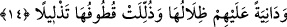

sıcak nede soğuk vardır.” Bir başka hadis-i şerif şöyledir: “Cehennem Rabbine
şikâyette bulundu ve «bir kısmım diğer kısmımı yedi, bana biraz nefes aldır» dedi.
Bunun üzerine Allah cehenneme her yıl iki kez nefes alma izni verdi. Bunlardan birisi
kışın dışarıya soluduğu nefestir, diğeri de yazın. İşte sizin kışın karşılaştığınız
şiddetli soğuk cehennemin dışarıya verdiği birinci nefes, yazın en sıcak günlerde
karşılaştığınız sıcaklık da dışarıya verdiği ikinci nefestir.” [220]
İbn Abbas (r.a.)’dan şöyle rivâyet olunmaktadır: “Cennet ehli cennette bulunurlarken
birden güneş ışığı gibi bir ışığın parladığını ve bahçeleri aydınlattığını görürler.
Cennetlikler: «Ey Rıdvan! Rabbimiz -celle celâluhu- bize orada ne aşırı bir güneş ne de
aşırı bir soğuk görürler buyurmuştu. Şimdi bu da ne oluyor» derler. Bunun üzerine
Rıdvan onlara: «Bu o âyette işâret edilen güneş değildir, ay da değildir. Fakat bu ışık,
Hz. Fatıma ve Hz. Ali (r.anhümâ)’nın ışıklarıdır. Onlar, bir kez güldüler de onların
gülmelerinin nûrundan cennetler aydınlandı. Allah Teâlâ, İnsan sûresinin birinci
âyetinden yirmi ikinci âyete kadar olan kısmı onların hakkında indirmiştir» der.”
Kâşânî üzerinde durduğumuz bu âyetleri şöyle tefsir etmektedir: “Orada ne aşırı bir
güneş ne de aşırı bir soğuk görürler”: Yâni onlar, zât cennetinde o zâttan mahrum
olmakla beraber, ona karşı şevk ateşinin güneşini görmezler. Yine onlar, yaratıkların
yanında yer almanın doğurduğu zemherir soğuğunu görmezler. Çünkü –Yaratıcıyı unutup-
yaratıkların yanında yer almak, çok şiddetli bir soğuk ve ezici bir ağırlıktır.
et-Tevilâtü’n-necmiyye’de aynı âyetler şöyle tefsir olunmaktadır: Onlar visâl
cennetinde müşâhidi yok eden müşâhede güneşinin sıcaklığını görmezler. Öyle ki orada
şühûd lezzetini duymazlar. Çünkü müşâhedenin tesiri ve baskısı müşâhidi bütün
benliğiyle yok eder de onlar, mâbûd ve mahbûb olanı şuhud lezzetini duymazlar.
Nitekim Peygamberimiz (s.a.), bir duâlarında bu mânâya şöyle işâret ediyor: “Allahım!
Bize senin müşâhede lezzetini nasip eyle! Bize hicap ve perde soğukluğunun
zemheririni tattırma.” [221]
14. (Cennet ağaçlarının) gölgeleri, üzerlerine sarkar; kolayca koparılabilen
meyveleri istifâdelerine sunulur.
“(Cennet ağaçlarının) gölgeleri üzerlerine sarkar” Bu gölgeler, dört bir yandan
cennete giren “ebrâr” kullara yakın bir hâldedir. Âyette bahsedilen “zılâl”, -tercümede
gösterildiği üzere- güneş ışığının zıddı olan gölge olup bunun cennetliklere
yakınlığından söz edilmektedir. Bu yakınlık, ya cennetliklerin yan tarafları veya üst
tarafları itibariyle yakınlık olabilir. Gölge kelimesine bitişik olan zamir ise ya “cennet”
kelimesine veya ağaçlar anlamındaki “eşcar” kelimesine döner. Her iki takdire göre de
âyetin mânâsı doğal olarak değişir. Zamir “ağaçlar”a dönerse mânâ şöyle olur: